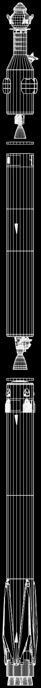
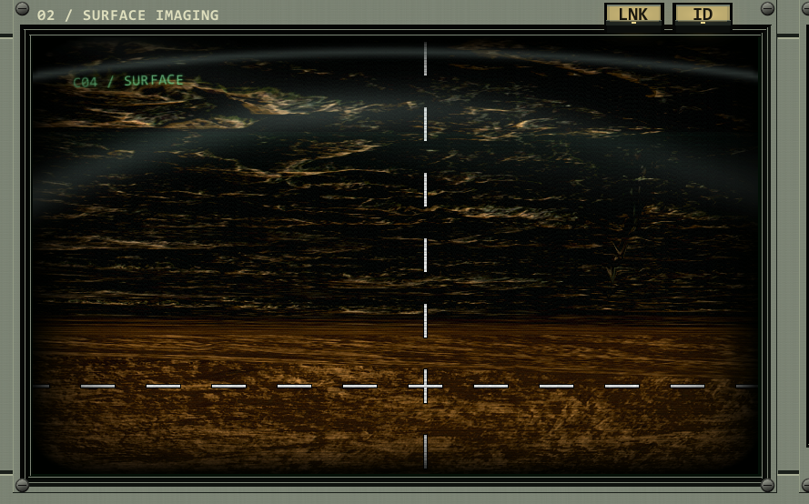
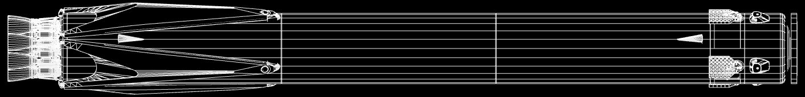
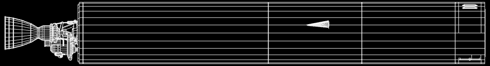
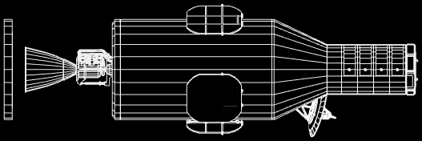
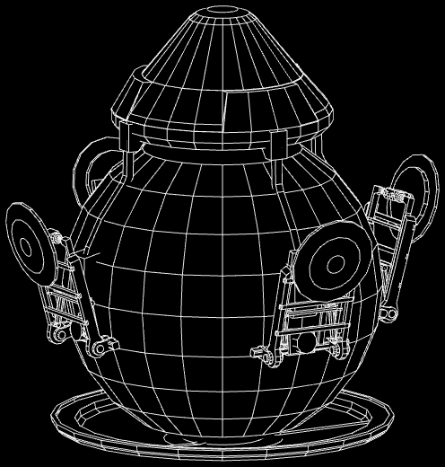
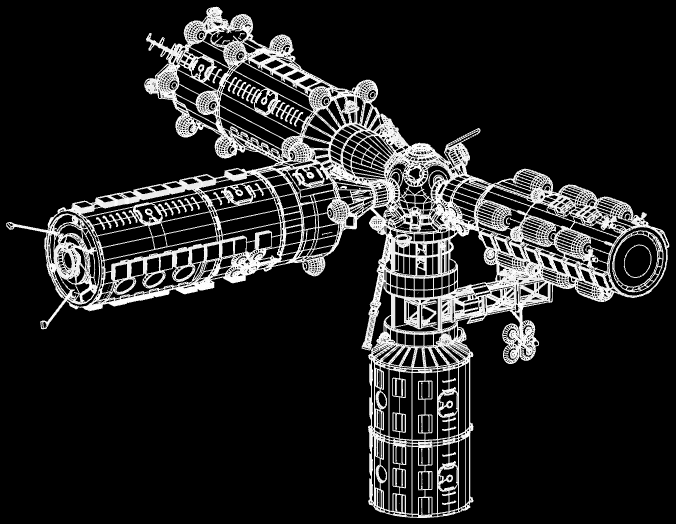
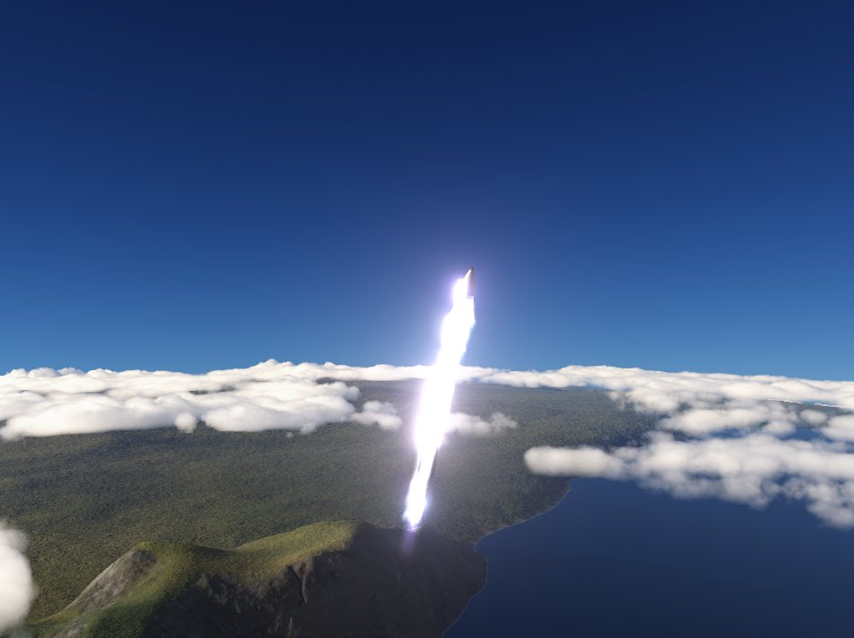

Pechka 1 has landed on Vesta
We go first.
The first landing on another planet. A booster that has flown ten times. A station crewed without a break. KOSMOS builds its own rockets, brings them home, and flies them again.

The first picture from another world
- 193
- science units sent home
- 5 h 16 m
- working on the surface
- 3 h
- of radio link through the carrier
- 16 days
- from liftoff to touchdown


Pechka 1 is a hardened pressure sphere with a barometer, a thermometer and cameras. It landed under air dense enough to crush it and kept working long enough to send everything home through the Hawk carrier overhead.
The flight, minute by minute
Launch
- Liftoff on all nine booster engines, heading due east
- Maximum aerodynamic pressure, 31 kPa at 11.8 km
- Booster cutoff at 46 km and 1,940 m/s, stage separation
- Perseus upper-stage ignition
- Parking orbit, 85 km at 8.6° inclination
- 1,637 m/s burn to Vesta. Perseus burned to empty; the Hawk carrier finished the job
Arrival and landing
- Inserted above Vesta at 155 km, then crept down through the air in a tightening spiral
- Touchdown. Temperature, pressure and surface imaging returned through the carrier
- The carrier passed behind Vesta and the link to Gael closed
- Probe lost after 5 h 16 m on the surface
Tianwen-1 flew a full test flight first; the test and the maiden voyage both went to plan. Mission clock in six-hour Gael days.
Permanent record: complete mission success. Approved by the Director.
The vehicle that did it
Every drawing on this page comes from the real craft file, part by part. Designed in house and flown again whenever it comes home.
-

Phoenix 10 booster
Nine methalox engines, about half the size of our competitors' rocket. After separation it flips, burns back and lands on the pad or the VAB helipad under our Niepan flight software. Booster B1002 flew ten times and landed nine. On its tenth flight we chose to spend it entirely, so the Pechka mission had every bit of performance.
-

Bifang
Hydrogen-oxygen upper stage on one Perseus vacuum engine, named for the one-legged fire bird. It finishes the climb to an 85 km parking orbit and starts the burn to the planets.
-

Hawk carrier
A small methalox stage on one MU-018 Hawk, 382 s in vacuum. It finishes the departure burn, carries the lander across and stays overhead as its relay.

Pechka
The Kettle. A hardened pressure sphere built to survive entry and report from the surface for as long as the air allows.

Kir station
Our crewed home in Gael orbit, 374 parts at 115–126 km. Next it becomes a fuel depot.

What we have flown
| Where | Done | Still to win |
|---|---|---|
| Vesta | First landing on another planet, with science and a surface photograph. | A lander that survives longer |
| Gael orbit | Kir station, crewed. Docking, spacewalks, relays and the first Kerblink satellites. | Refuelling in orbit |
| Iota | Crewed landing and return, a rover, and the Hermes base and lab. | Long crew rotations |
| Ceti | Probe landing, flyby and return. | A crewed landing |
| Reuse | B1002 flew ten times and landed nine. Its tenth flight was spent entirely on the Pechka mission, by choice. | A downrange landing |
What we fly next
Test log: next up
- In progress
Peng P-1 static fire
The booster is held down on the pad and all eight engines are lit at full thrust, to prove the engines, plumbing and mount before it is allowed to fly.
- Simulation
XM-1P fit check
Tianwen-1 Vesta A2 on the pad with the evenly scaled Xuemai engines. Check all nine sit flush on the plate, light them, then revert.
- Simulation
Peng P-1 ascent
First liftoff of the kerosene heavy booster with its dummy payload, to check thrust, control and stability before a real flight.
- Test flight
Peng P-1 flight 1
Dummy 10 t payload into the sea while the booster turns back and tries to land itself.
- Test flight
Phoenix 10 on Xuemai
The first flight on the new engines, with the booster coming home under Niepan.
Missions
Peng heavy booster tests
A kerosene heavy booster with eight engines, flying a dummy 10 t payload into the sea and landing itself afterwards.
Refuel from Kir
Kir's Fuel Module 1 is full. Next we pump it into a visiting ship: the first transfer of fuel in orbit.
The Ciral Directive
Ciral I, the first observatory dedicated to our star, Ciro, and its close companion, Grannus.
Complete Kerblink
Four more satellite groups for a full constellation around Gael.
Chang'e-Ceti
The first crew to land on Ceti.
Zhurong to Niven
A lander and rover on the desert world.
The other side
The Americans fly two launcher families and are building a modular station, Horizon. Nothing they have flown has left their home planet's orbit. Ours has landed on another one.
Our answer: refuel in orbit before their depot flies, and keep Kir crewed without a break.